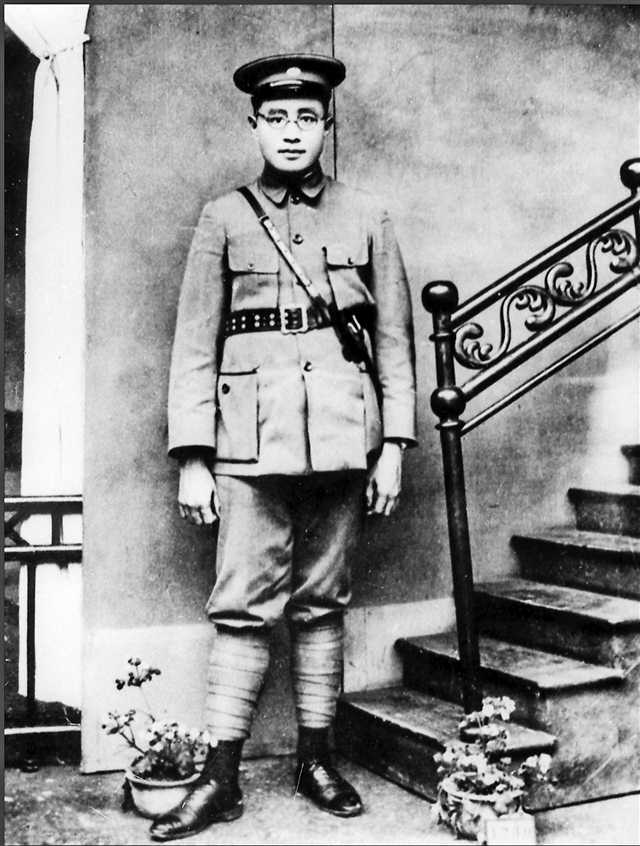

刘伯承（1892—1986）本籍

刘伯承（
1892
—
1986
）本籍，今重庆开县人，中国人民解放军创建人和领导人之一，中华人民共和国元帅，政治家、军事家、军事教育家。早年在重庆从事革命活动。
192s5
年加入中国共产党。之后受中共中央委派，负责重庆与四川的兵运工作，领导“顺泸起义”。
1949
年
11
月，作为第二野战军司令员，率部挺进西南，解放重庆，任西南军政委员会主席、中共西南局第二书记。后任南京军事学院院长，为军队建设作出了重大贡献。